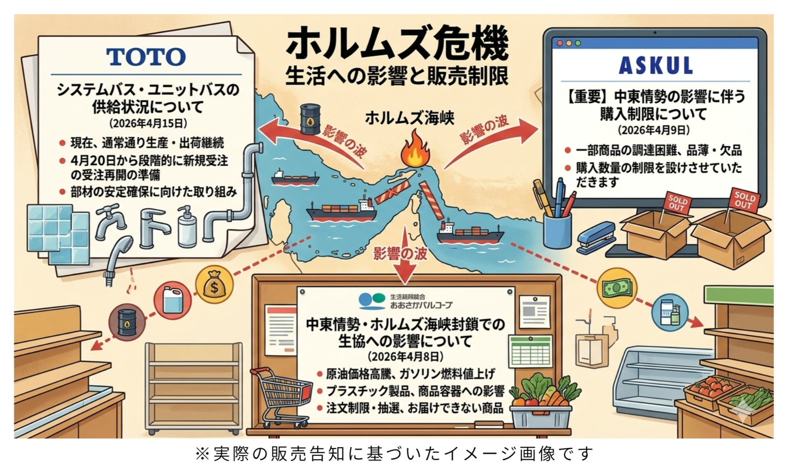

政府はなお「日本全体として必要となる量は確保できている」と説明する。確かに、国家全体の帳簿で見れば、石油も関連物資もゼロになったわけではない。だがホルムズ危機が暴いたのは、総量の不足よりも深い機能不全だった。必要な場所に、必要な日に、使える形で届かない。危機の本質はそこにある。
4月16日時点で政府自身も、一部で生じた「流通の目詰まり」について「解消が進んでいる」と説明した。裏返せば、目詰まりそのものは現実に起き、なお行政の介入を要してきたということだ。
危機の初期局面では、その異常は価格にはっきり表れた。ガソリン店頭価格は3月2日の1リットル158円から、16日には190円超まで上がった。わずか2週間で32円の上昇である。これは単なる値上がりではない。市場が平常時のようには機能せず、供給不安と調達リスクが一気に価格へ転化した速度だった。価格だけを見ていても不十分だが、価格の急変は、見えにくい可用性の崩れを知らせる警報だった。
図解
総量確保でも現場は詰まる
——ホルムズ危機で露呈した「可用性」の断絶（2026年4月16日時点）
入札不調・随意契約・供給拒否
交通分野では、可用性の崩壊がもっと露骨だった。国土交通省には約400事業者から「これまで通りの供給がなされていない」との声が寄せられた。入札が不調に終わり、随意契約でようやく1か月分だけ確保する。インタンク給油の見通しが立たず、スタンド給油でしのぐ。こうした事態は、量が足りないというより、通常の調達回路が壊れていることを示している。
省庁が一社ごとの燃料確保に走り回らなければならない時点で、それはもう平時の市場ではない。
ごみ処理でも事情は同じだ。一般廃棄物の処理現場では入札不調や契約期間の短期化、随意契約への移行が相次ぎ、産業廃棄物分野では軽油供給を断られる事例も出た。焼却施設の助燃剤用重油が不足し、事業者間調整で当面分をかき集める。これは安保論議の周辺ではなく、生活そのものの危機である。ごみが回収されず、焼却が止まれば、住民生活は直ちに傷む。

医療については、直近の変化を冷静に見たい。厚生労働省は4月10日、EMISを使って全国の医療機関から供給状況の報告を受ける運用を始めた。4月13日時点で相談総数は2,956事業者、専門チームは97人体制に増強されている。医療分野は、抽象的な懸念の段階を過ぎ、具体的案件をさばく段階に入った。
その象徴が、4月16日に決まった医療用手袋5,000万枚の備蓄放出である。これは有力な応急措置だが、同時に「量はある」と「届く」は別だと政府自身が認めた措置でもある。一般診療所と歯科診療所だけでも1か月需要は約9,000万枚にのぼる。5,000万枚放出は重要だが、それだけで持続的安定供給を保証する規模ではない。効く薬ではあっても、根治療法ではない。